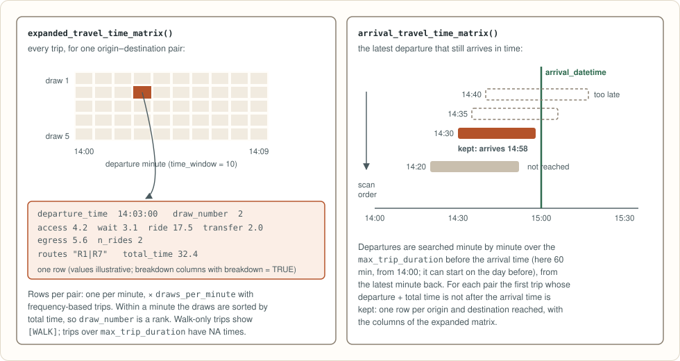

peabiru’s routing engine is written in Rust and runs inside the R session. This page follows a request from the input files to the numbers, with the same diagrams as the Rust guide. It describes what is computed and in which order, not the data structures, which change as the engine is optimised.
One engine, four packages

The Rust crate peabiru-core does all the work. This R
package checks the arguments, converts points and results between R and
Rust, and returns a tibble (or a data.frame or
data.table, see ?peabiru); the Python package
(which returns pandas data frames), the JavaScript package (the engine
compiled to WebAssembly, for browsers and Node) and the
peabiru command-line tool (CSV in, CSV out) do the same for
their users. There is no separate process to start and nothing is
written to disk.
Building the network

build_network() reads the .pbf and the GTFS
feeds of a directory and keeps the result in memory. The street network
has one edge per direction of every street segment, with the modes
allowed on it, a car speed and, for cyclists, a level of traffic stress;
public transport is grouped into patterns (trips that stop at
the same stops in the same order). Each stop is joined to the nearest
walkable street, and two walking tables are computed once: transfers
between nearby stops (up to 1 km) and walking distances from every stop
(up to 2 km), used to reach destinations.
Each step has fixed rules down to details that only matter on ties: the order in which ways, feeds and stops are read, which of two equal paths is kept, and how lengths and speeds are rounded. The same inputs therefore give the same network, and the same results, whatever the number of threads.

Public transport

The search over public transport is RAPTOR (Round-bAsed Public
Transit Optimized Router): round k finds the earliest
arrival at every stop with k vehicles, so
max_rides is simply the number of rounds. Running it for
each minute of the window from the last minute back to the first lets
each minute start from the results of the later one (“range RAPTOR”),
which is much cheaper than independent searches.
Frequency-based trips have no fixed departure times. For them every
minute is repeated draws_per_minute times with random
offsets, drawn from a Mersenne Twister seeded from seed and
the origin’s coordinates, so the same seed gives the same
numbers on every run and with any number of threads.
Expanded and arrival matrices

For these, the search also keeps, for every stop and iteration, the path that led there (which vehicles, boarded where and when), so each trip can be broken down into access, waiting, riding, transfers and egress.
How the results are checked is described in the comparison with r5r.
Credits
The algorithms and their fine print are ported from Conveyal’s R5 7.6 (MIT licence, ©
Conveyal), including RAPTOR as implemented in R5’s
FastRaptorWorker; the decay functions’ exponential
reproduces Apache Commons Math 3’s FastMath.exp
(Apache-2.0).